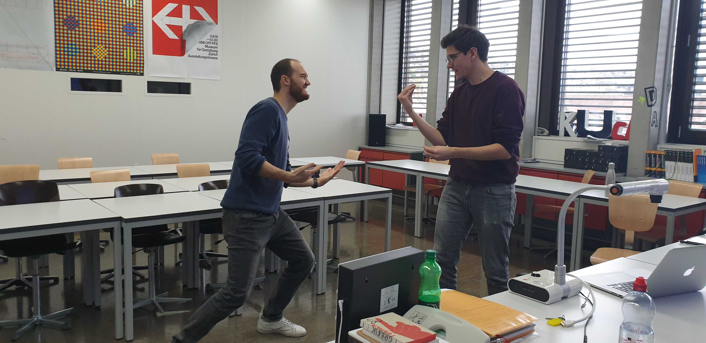
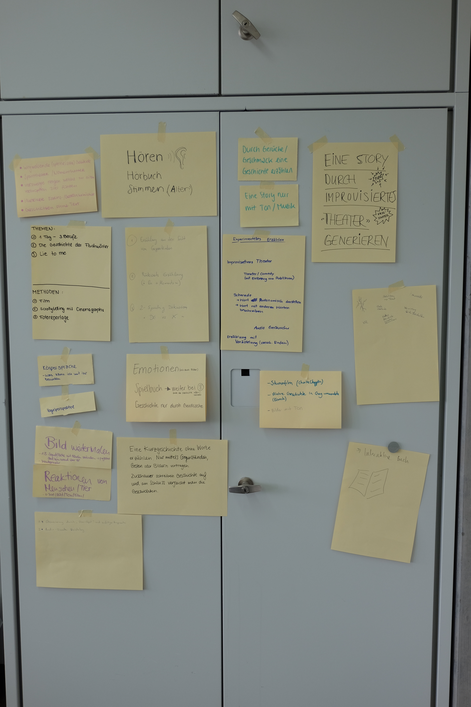
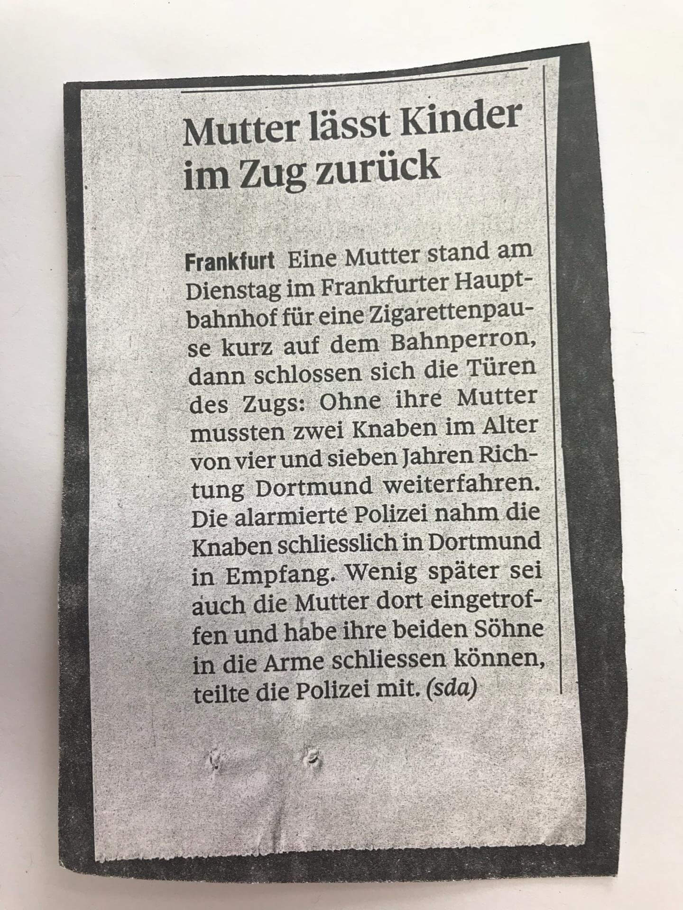
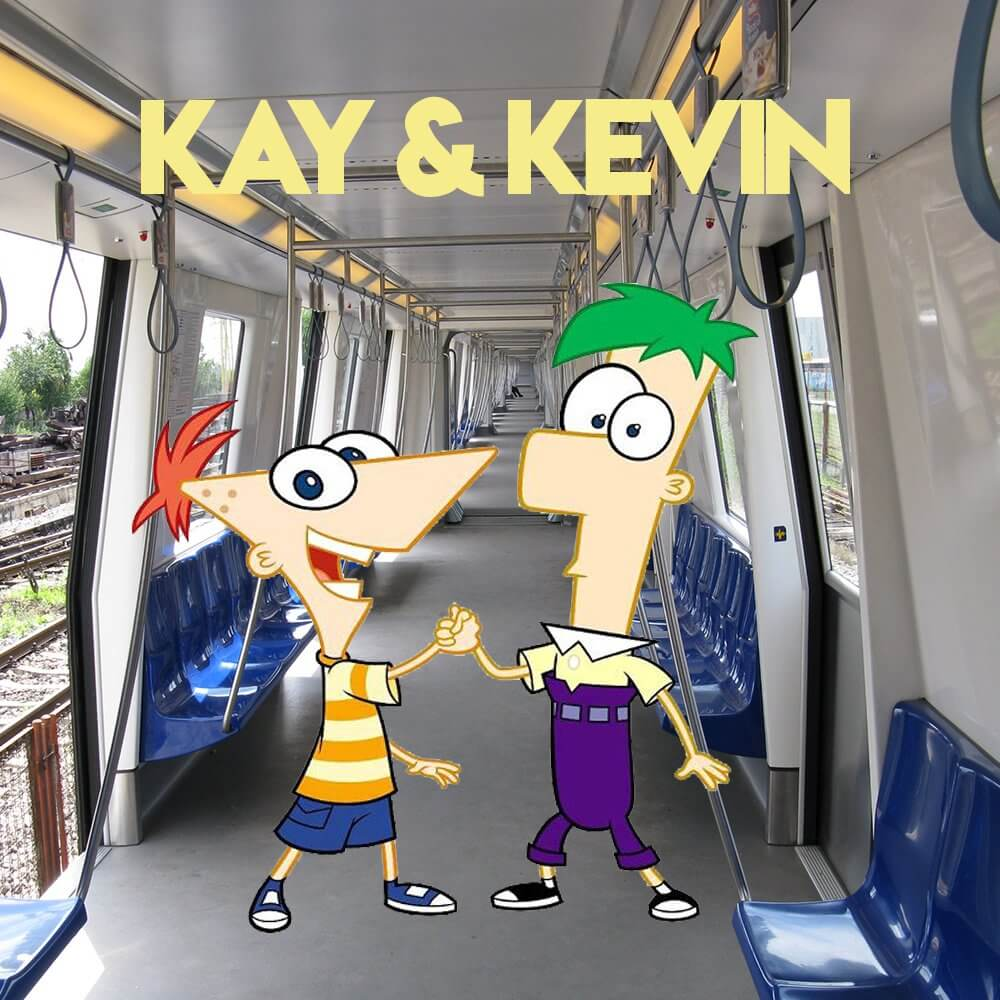
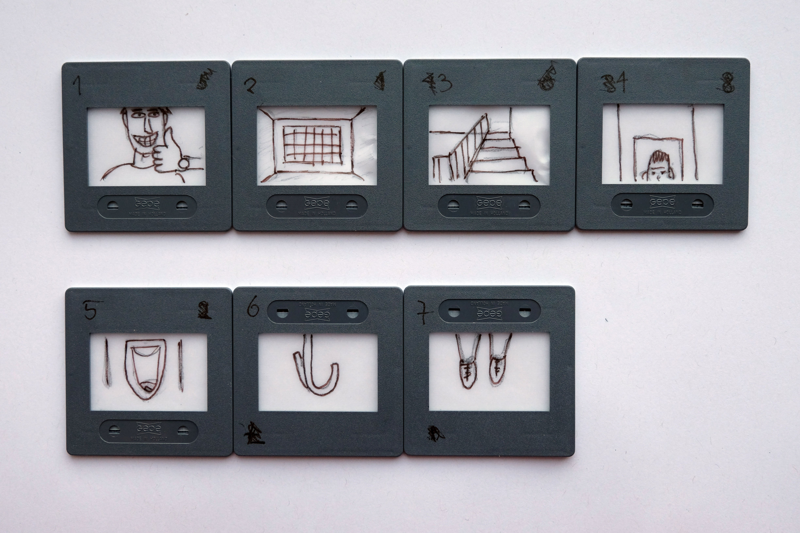
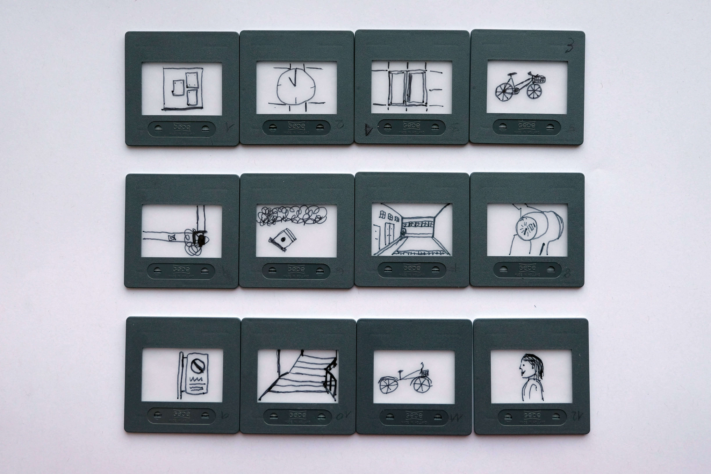
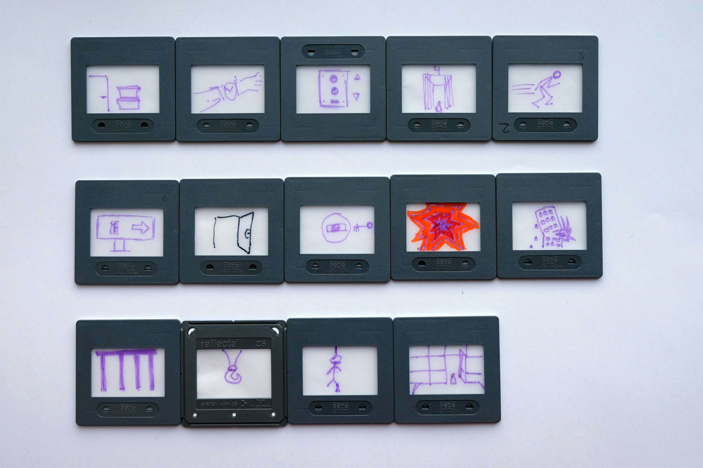

Nun war es endlich soweit. Wir stellten unsere Projekte in der Klasse vor und präsentierten was wir erarbeitet haben und was wir in diesem Prozess gelernt haben. Für mich war es sehr spannend zu sehen, wie mit der gleichen Ausgangslage so viele verschiedene Resultate erzielt wurden und wie sich die verschiedenen Persönlichkeitstypen auch in der Arbeit widerspiegeln.
Ich fand es ausserdem sehr erfreulich, dass durch die ganze Klasse hinweg die Gruppenarbeit sehr gut und unkompliziert funktioniert hat.
Der anschliessende Apéro, zu welchem die ganze Klasse etwas dazu beigetragen hat, war dann auch ein super Abschluss eines sehr spannenden Faches.
Inhaltlich wird heute «zum Glück» nichts mehr vermittelt, somit bleibt uns die ganze Zeit, um im Hinblick auf die Projekt-Deadline an den Projekten zu arbeiten. In unserer Gruppe machen wir noch einen letzten Feinschliff und koordinieren die Präsentation von nächster Woche.

Unzuverlässige Quellen sagen, dass dieses Bild gestellt sei.
Storyboarding
An der Wandtafel sind rund ein Dutzend Kästchen mit Skizzen aufgezeichnet. Ich bin sehr verblüfft. Einerseits ab der Einfachheit der Skizzen, anderseits aber auch wie klar eine Idee sichtbar wird. Basil erklärt uns, dass Storyboarding essentiell ist, für die Entwicklung eines Filmes. Da bereits ein paar Sekunden Filmmaterial mehr als geplant können sehr hohe Zusatzkosten zur Folge haben. Deshalb ist es wichtig, dass alle Szenen, feinsäuberlich durchgeplant und skizziert werden, bevor mit der effektiven Produktion begonnen wird.
Das Storyboarding hilft auch zum Festhalten von Kameraeinstellungen, Kamerabewegungen und Bewegungen von Objekten.
Spannung
Eigentlich stand heute viel anderes auf dem Programm, jedoch hat Basil als Ergänzung zur letzten Woche noch folgendes Video gezeigt. Das Video zeigt eines der grössten Learnings, welche ich in diesem Fach hatte. Alfred Hitchcock erklärt wie man beim Publikum mit «Spannung» und «Auflösung» spielen kann und dass diese beide Komponenten immer in einem guten Verhältnis zu einander eingesetzt werden sollten.
Dramaturgie
Im heutigen Unterricht setzten wir uns mit der Dramaturgie von Spielfilmen,
aber auch von allen anderen Formaten, welche eine lineare Geschichte erzählen auseinander.
Ein grundlegendes Modell, welches häufig anzutreffen ist, ist das sogenannte 3-Akt-Modell.
In diesem Modell wird, wie der Name bereits erahnen lässt, eine lineare Erzählung in drei Akten aufgeteilt. Die Akte werden durch «Plotpoints» getrennt, welche jeweils die Geschichte in eine neue Richtung bringen.
1. Akt – Exposition
Am Anfang einer Erzählung geht es darum, den oder die Hauptprotagonistin kennenzulernen. Das Publikum soll mehr darüber erfahren, was die Person ausmacht, woher sie kommt, wo sie lebt oder welche Stärken und Schwächen sie hat um die folgenden Handlungen besser zu verstehen und in einem Kontext betrachten zu können. Der Plotpoint am Ende dieses Aktes ist meistens ein Problem, welches im Leben des Hauptprotagonisten auftaucht.
2. Akt – Konflikt
Der Hauptprotagonist wird mit einem Problem konfrontiert. Das kann ein Problem mit sich selber, aber auch mit einem Gegenspieler oder auch der Natur oder einer höheren Gewalt sein. Die Person setzt sich mit dem Problem auseinander und versucht dieses zulösen. Meistens lernt die Person im Verlauf dieses Prozesses etwas oder erlangt eine neue Erkenntnis.
Der 2. Akt ist meistens doppelt so lang wie der 1. und 3. Akt und somit der längste Teil.
3. Akt – Auflösung
Der Hauptprotagonist versucht nun mit den im 2. Akt erlernten Fähigkeiten oder den gewonnenen Erkenntnissen das Problem zu lösen und so quasi den Gegner zu besiegen.
Der 2. Akt ist meistens gleich lang wie der 1. Akt.
Konkretisierung des Projektes
Der heutige Halbtagesblock stand uns ganz zur Verfügung,
um die gesammelten Materialien und Geschichten vom Besuch des
Flohmarktes zu verwerten und unser weiteres Vorgehen zu planen.
Gefühlt waren wir noch die einzige Gruppe, welche noch nicht eine
klare Vorstellung unseres Zieles oder Endproduktes hatten und ich
war mir noch nicht sicher, ob das ein Vorteil oder ein Nachteil für
uns sein könnte.
Wir haben die Zeit hauptsächlich damit verbracht Ideen zusammenzutragen und zu brainstormen.
Von analogen und digitalen Spielen und Theater hin zu Verästelungsgeschichten hatten wir
fast alles einmal auf dem Tisch und durch besprochen.
Schlussendlich sind wir wieder bei der Anfangsidee, dem Improvisieren, gelandet und haben uns entschieden
ein Gesellschaftsspiel zu entwickeln, bei welchem es darum geht aufgrund von vordefiniertem zufälligen Input als Gruppe eine
Geschichte in der Form eines Theaters zu erstellen.
Wir haben gleich auch ein paar mögliche Spielvarianten und Regeln besprochen und diese gleich ausprobiert.
So richtig gut funktioniert hat noch nicht viel. Wir waren dafür sehr motiviert 😉.
Besuch des Kanzlei-Flohmarktes
Jetzt war es also soweit, wir gingen zum Kanzlei-Flohmarkt mit
der Aufgabe, Geschichten zu generieren und keiner Vorstellung davon was
dabei wirklich herauskommen könnte.
Wir haben uns vorgenommen, in unserer Vierergruppe uns im Improvisieren
herauszufordern.
Konkret hat das zum Beispiel so ausgesehen, dass ich mich bei einem Stand
für eine Gitarre interessiert und diese gleich reserviert habe.
Jemand anders aus der Gruppe hat danach genau dasselbe beim
gleichen Stand gemacht und konnte die Gitarre ebenfalls reservieren. Wir hatten
sogar unterschiedliche Preise angeboten bekommen.
Später sind wir dann ziemlich gleichzeitig zurückgekehrt und haben
geschaut, wie der Verkäufer nun mit dieser Situation umgeht.
Als wir beide dann die Gitarre nicht kaufen wollten, war er schlussendlich
mir sogar nochmals nachgelaufen und hatte den Preis noch einmal unterboten.
Auf ähnliche Art und Weise haben wir weitere solche Experimente durchgeführt,
welche bei Weitem nicht alle auf einen grünen Zweig hinausliefen. Aber es war
sehr spannend, über seinen eigenen Schatten springen zu müssen und auch zu sehen,
dass vieles was man sich im Kopf vorgestellt hat, einfach nicht funktioniert.
Mit sehr vielen Eindrücken und Erlebnissen haben wir den Flohmarkt wieder verlassen.
Vorstellen konnte ich mir aber immer noch nicht wo das ganze Projekt hinführen wird.
Startschuss zur Projektarbeit
Zugleich war auch der Startschuss zur Projektarbeit. Wir haben dazu eine Ideen-Börse veranstaltet. Alle Studentinnen und Studenten haben Themen, für welche sie sich interessieren auf Zettel aufgeschrieben und an einer Wand angeheftet. Im Plenum haben wir uns gegenseitig die Vorstellungen und Interessen vorgestellt. Anschliessend gab es einen offenen Austausch, in welchem sich die Projektteams geformt haben. Meist geschah dies auf Grundlage derselben Interessen.

Diese Wand mit allen Zetteln war die ausgangslage um ein Projektteam zusammen zustellen.
Innerhalb des Projektteams konnten wir uns dann organisieren und besprechen in welche Richtung wir mit unserem Experiment gehen und wie wir Inputs und Inhalt generieren wollen. Dazu haben wir auch mit dem Schreiben einer Absichtserklärung begonnen.
Wir hatten von Basil Vogt keine Vorgaben zum Projekt. Das Einzige was wir wussten, war, dass wir im nächsten Unterricht zum Kanzlei-Flohmarkt gehen werden und dort die Möglichkeit haben, Geschichte und Inhalte für unser Projekt zu generieren.
Ich hatte mich zusammen mit Chantal, Sina und Patrick zu einer Gruppe zusammengeschlossen. Als Projektteam haben wir entschieden, dass wir versuchen wollen, in improvisierten Situationen mit Händler wie auch Besucher, spannende, lustige oder skurrile Gespräche zu provozieren.
Kay & Kevin
Um uns weiter mit der Thematik des experimentellen Erzählens bekannt zu machen, erhielten wir im heutigen Unterricht von Basil Vogt die Aufgabe, eine Spielidee zu entwickeln.
In Gruppen aufgeteilt, hat er uns verschiedene skurrile und lustige Zeitungsartikel aus seiner Sammlung verteilt. Wir mussten nun einen dieser Artikel als Grundlage für unser Spiel auswählen.
Wir haben uns für die Geschichte zweier im Zug vergessenen Kinder entschieden.

Zu diesem Zeitungsartikel haben wir eine Spielidee entwickelt.
Unser Spielkonzept musste folgende Punkte beinhalten und anhand dieser präsentiert werden.
Hauptfigur / Strategie
Ziel des Spiels
Game Over
Thematik
Spielmechanismus
Spielmodus
Gegner / Hürden / Hinternisse
Unser Resultat sah folgendermassen aus:

Hauptfigur / Strategie
Titel: Kay & Kevin
Schauplatz: ICE Richtung Dortmund
Die Hauptfiguren sind…
Kay: 7 jähriger Junge
Kevin: 4 jähriger Junge, kleiner Bruder
Spielmodus: Singelplayer für Kinder ab 18 jahren
Plattform: iPhone und Android
Thematik
Die Mutter wird in der Türe eingeklemmt. Die Brüder müssen nun durch den ganzen Zug rennen und zum Zugführer zu gelangen und den Zug zu stoppen. Die Zeit ist knapp, denn bald fährt der Zug in einen Tunnel. Im ganzen Zug sind Notbremsen verteilt. Diese geben dem Spieler etwas mehr Zeit.
Ziel des Spiels
Erreiche den Zugführer und stoppe den Zug. Durch eingesammelte Coins kannst du im Store neue Skills und Skins kaufen.
Game Over
Das Spiel ist vorbei, wenn der Zug den Tunnel erreicht und die Kinder noch nicht den Zug stoppen konnten.
Spielmodus
Jump ’n’ Run Singleplayer auf dem Smartphone.
Gegner
Betrunkene Leute
Zugkontrolleure
Business Leute, welche die Tasche im Gang stehen lassen
Andere Kinder, welche mit den Jungs spielen wollen.
Hunde
Rentner Wandergruppe
Hausaufgabe vom letzten Mal
Als Hausaufgabe aus dem letzten Unterricht hatten wir den Auftrag bekommen mit dem eduPad als Klasse drei weitere Geschichten zu generieren. Das Ziel war, dass jeder und jede zu einem beliebigen Zeitpunkt den Editor öffnen und einen Satz zur bestehenden Geschichte dazuschreiben soll.
Folgende drei Geschichten waren das Resultat dieser Übung.
Als Max, der unwiderstehliche, ging, kam Peter vorbei und dachte eine grosse unglaubliche Idee.
Diese Idee wollte er jedoch vorerst noch für sich behalten. Es fiel ihm jedoch überhaupt nicht leicht, denn er war so stolz darauf und felsenfest davon überzeugt, dass er mit dieser Idee die Welt verändern würde.
Peter hatte nämlich eine Formel für ewige Jugend herausgefunden! Jahrelang hatte er an der perfekten Zusammensetzung gefeilt und das Elixier direkt an sich selbst getestet.
Als er dann bei Max vorbeischauen wollte, ging dieser leider genau in diesem Moment zur Arbeit. Da dachte er sich, durch seine Idee mit der ewigen Jugend, würde er es evt. hinkriegen, dass man als junger Kerl der Arbeit entkommen könnte. Er wusste nur noch nicht wie und wann er das nun auch Max erzählen wollte. Er setzte sich vor die Haustüre von Max und starrte betrübt vor sich hin. Plötzlich tippte ihm jemanden auf die Schulter. "Was machst du den hier?", fragte Max. Peter war überglücklich, dass er Max seine Idee doch noch erzählen kann und sprudelte los. Doch Max hielt ihn für verrückt und bittete ihn zu gehen, doch Peter liess sich nicht abwimmeln und versicherte Max, dass er es ihm schon noch zeigen werde.
«Die Frage ist nur wie?» fragte sich Peter. Seine Erlebnisse aus den goldenen 20er Jahren hat ihm bis jetzt noch niemand abgenommen und auch die Erinnerungen an Woodstock glaubte keiner. Er beschloss noch am selben Nachmittag den Lieblingskuchen von Max, mit reichlich Elixier-Tropfen, zu backen. Doch auch der Duft eines frisch gebackenen Schockoladenkuchens inkl. Exilier-Tropfen konnte Max nicht dazu bringen, Peter als glaubwürdige Person wahrzunehmen.
Olga hat eine grosse Wut seit vielen Tagen und Wochen, jedoch denkt sie nichts.
Wie kann man eine Grosse Wut haben und gleichzeitig nichts denken? fragen Sie sich jetzt sicher.
Beginnen wir ganz am Anfang: Olga ist eine weltbekannte Yogameisterin und hat vor knapp 20 Jahren das Meditieren auf einer Reise nach Indien für sich entdeckt.
Doch sie hat mit der Zeit gemerkt, dass es zwischen den Yoga-Session Dinge gibt, die man nicht immer kontrollieren kann. Dies häufte sich mit all den Jahren an.
Nun hat sie entschlossen eine Power-Yoga Klasse zu starten, in der alle ihre Wut auslassen können. Mit vollem Erfolg!
In dieser Klasse treffen sich Männer und Frauen, die gleich wie Olga, schon lange Zeit eine grosse Wut mit sich mitschleppen. Sie können sich gegenseitig im Lotussitz mit Stressbällen bewerfen und dadurch ihre Spannungen mit der inneren Mittte lösen. Nach der Stunde lassen jeweils alle Teilnehmer, völlig entspannt, den Abend in Frau Gerolds Garten ausklingen.
Dort trifft man sich auch gerne mit anderen Yogaklassen und tauscht sich aus. Manchmal gehen die Gespräche jedoch weit über Yoga-Themen hinaus.
Ich bin auf der Hut, weil ich keine Zeit für wichtige Dinge heute habe.
Da fragt man sich direkt, welche Dinge effektiv wichtig sind.
Bereits am morgen früh filterte ich die wichtigen Aufgaben heraus, um mich auf diese konzentrieren zu können.
Als ich mir einen Kaffee machen wollte und eine saubere Tasse suchte, fiel mir auf, dass der Abwasch noch nicht erledigt war. Eine halbe Stunde später war dieser erledigt und die Küche blitzblank. Doch da fiel mir auf, dass der Küchenboden endlich wieder mal gereinigt werden sollte.
Wäre wichtig, dachte ich. Doch heute hab ich keine Zeit dafür.
Das sehe ich genau so, nur habe ich ebenfalls keine Zeit dafür. Ich denke da muss wohl ein anderer daran glauben.
Genau, denn wie heisst es so schön - ich soll mir mehr Zeit für die wichtigen Dinge im Leben nehmen - also schnappte ich mir ein Buch aus dem Bücherregal und setzte mich damit draussen auf unsere Terrasse.
Beim Lesen machte mich dieser Quote stutzig :" Wofür muss ich meine Zeit jetzt tauschen, um langfristig den meisten Wert dafür zu bekommen?"
Diese Frage beschäftgte mich lange Zeit und draussen wurde es schon langsam dunkel. Mir fiel auf, dass ich praktisch den ganzen Tag draussen auf der Terasse verbracht hatte und all die «wichtigen» Dinge vollkommen nebensächlich wurden.
Danach widmete ich mich aber der wichtigsten Sache überhaupt, dem Schlaf.
Davon kann man schliesslich nie genug bekommen.
Zu viel Schlaf kann aber auch ein Gefühl von Trägheit auslösen.
An unserem ersten Tag in diesem Fach haben wir als Einführung verschiedene Experimente durchgeführt, um zusammen als Klasse neue Geschichten zu generieren.
Eines davon war ein sogenanntes «Fotografie» Experiment. Wir hatten allerdings keine Kamera zur Verfügung, sondern mussten uns selbst in eine verwandeln.
Das hat folgendermassen funktioniert.
Aufgeteilt in dreier bis vierer Gruppen durften wir uns im und ums ganze Schulhaus bewegen. Jeweils eine Person der Gruppe nahm die Rolle der Kamera ein und eine andere die Rolle des Fotografen. Der Fotograf musste nun die Kamera, welche die Augen geschlossen hatte, zu einem Objekt führen, welches er festhalten möchten. Mit einem Händedruck betätigt der Fotograf den Auslöser der Kamera. Die Kamera hat zehn Sekunden Zeit sich den Eindruck zu merken.
Dieser Prozess wurde pro Person drei Mal wiederholt. Die gesammelten Eindrücke mussten anschliessend auf einem leeren Dia gezeichnet werden.
Jede Gruppe hatte dann den Auftrag zu den eigenen gezeichneten Dias und deren von zwei anderen Gruppen, eine Geschichte zu schreiben.
Herausgekommen sind in meiner Gruppe folgende Geschichten.
Unsere Story

Sam ist gut gelaunt.Er wird zu unrecht zu einer lebenslangen Haftstrafe verurteilt.Seine Zelle befindet sich im Hochsicherheitstrakt im Untergeschoss.In seiner Zelle angekommen, werden Sam die Handschellen durch die Luke in der Türe abgenommen.Er begibt sich zur Toilette.Als er dabei nach oben blickt, sieht er einen Haken.Mit den Schnürsenkel seiner Schuhe erhängt er sich.
Story 1:

Jemand findet keinen ParkplatzHat nicht mehr viel Zeit, es ist bereits 11 Uhr.Jemand ruft aus dem FensterDas es vorne in der Ecke beim Baum noch einen Parkplatz hat. Dort können sie das Fahrrad nehmen um ans Ziel zu gelangen.In der Kurve fällt das Portemonnaie hinaus in den BuschDer reklamierende geht aus seiner Wohnung rausEr steigt auf seine VespaEr parkiert die Vespa in einem ParkverbotEr rennt die Treppe hinaufEr sieht das Fahrradund übergibt das Portemonnaie
Story 2:

Die Särge werden angeliefertDiese sind aber zu spätDer UPS-Man geht zum Liftund fährt in den 4. StockDort rennt errichtung NotausgangLäuft durch die HintertürAls er die zweite Tür öffnen möchtegibt es eine grosse ExplosionDas ganze Haus stürzt zusammenNicht einmal die vier Hauptsäulen halten stand.Der UPS Man kam mit einer verlorener Hand davon und trägt jetzt eine Protese.Ein paar Jahre später Kam er aber nicht damit klar und hat sich dann erhängt.Die Moral der Geschicht, öffne die falsche Türe nicht. #rhymes